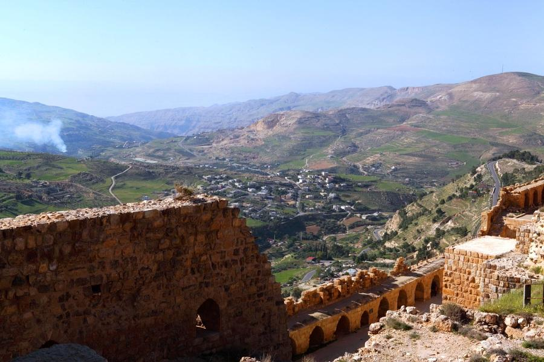

Al-Karak, located in the heart of Jordan, is home to one of the most impressive Crusader castles in the region. Perched on a hilltop, Al-Karak Castle offers stunning panoramic views of the surrounding desert and hills, making it a historical gem and a must-visit landmark in Jordan.
The city itself is a rich tapestry of medieval history, ancient architecture, and a deep connection to the past. As you explore its narrow streets and ancient ruins, you’ll feel transported to a time of knights, kings, and epic battles. Al-Karak is a testament to Jordan's rich historical legacy, with its well-preserved castle standing as a proud symbol of the region’s past.
